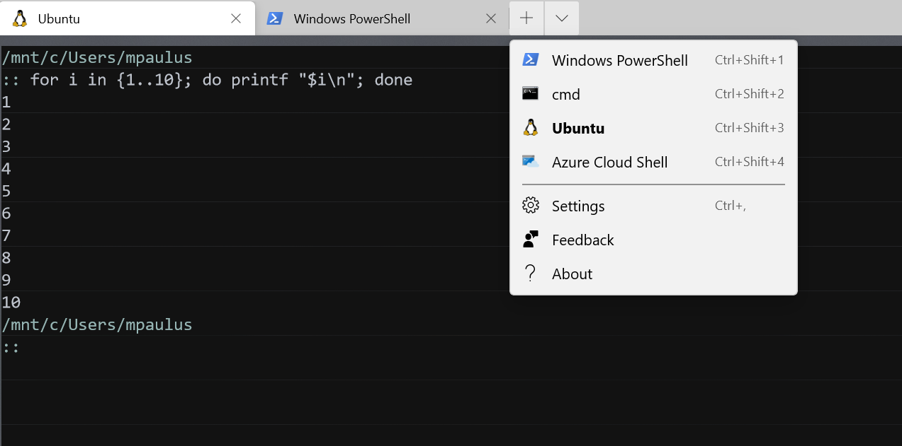

Software Skills You Need to Know About: Part II
What was Part I Again?
- Version Control and Git
- Document preparation in LaTeX (overleaf.com)
Topics
- Online psychrometrics tools
- What is a terminal, shell, etc?
- The Windows Subsystem for Linux
- Building projects with
make - Building EnergyPlus models
- Building documentation
psychrochart.com
excel-psychrometrics.com
Some Terminology
- Terminal
- Shell
- Command line
Terminal

Terminal Emulator Programs
- Original Console (Windows)
- Windows Terminal (Windows)
- ConEmu (Windows)
- iTerm2 (Mac)
- Gnome Terminal
- xTerm
- Alacritty
- So many more…
Shell

Shell
- Bash
- PowerShell
- Lesser known:
- zsh
- fish
- nushell
Command Line
Most abstract concept: Basically anywhere you type the command to enter it
Abstraction of the Computer
Data -> Program -> Output
One Step Further
Data -> Program -> Output -> Second Program -> Adjusted Output
program1 data | program2 | program3 > outputAnother Step
Windows Subsystem for Linux
- Provides an easy way to use Unix utilities in a Windows environment.
Gnu Coreutils
Important programs you should know about:
- parallel: Run programs in parallel
- units: Cool utility for unit conversion
Building Project with make
makeis one of many build automation tools
Famous Installation Commands
make Syntax
target : prerequisites...
recipe